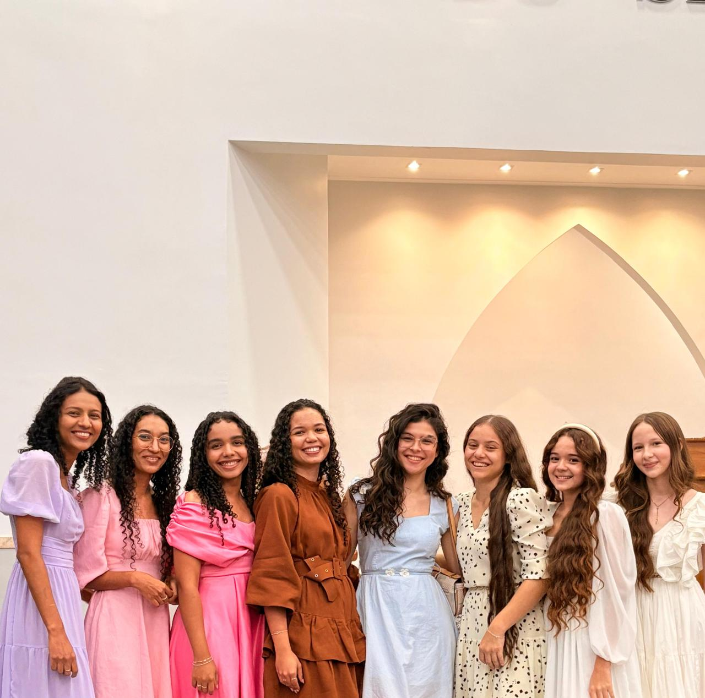
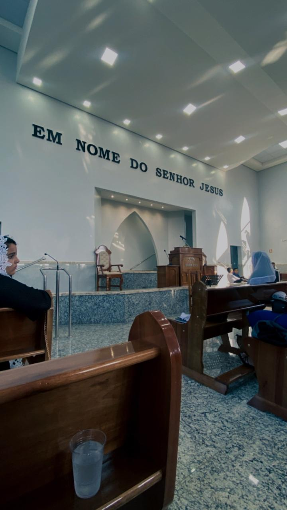

Reunião de Mocidade em MiranorteReunião de Mocidade em GurupiJovens na Reunião de MocidadeAna com amigos na igrejaReunião de Mocidade em Itapaci

Momento de comunhãoRecordação especial na igreja

Recordação especial na igrejaVídeo de momentos especiais na igreja